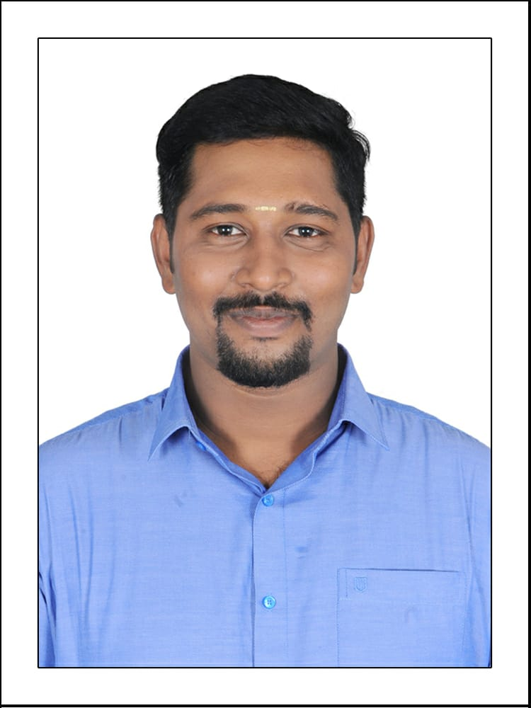

Ramakrishnann Sasikumar

Summary:
Results-driven project manager with over 8 years of experience with a CAN DO attitude,
a strategic thinker, and a servant leader committed to driving project success. Adept
at orchestrating multifaceted projects from initiation to completion, ensuring timely
delivery within scope and budget. Recognized for cultivating collaborative team environments,
fostering innovation, and embracing challenges as opportunities for growth.
Work Experience:
Digital Project Manager Senior Consultant | NTT DATA
May 2022 - Present
- Prepare a High-Level Plan/Project Roadmap for the entire project by collaborating with all stakeholders.
- Facilitate strong follow-ups throughout the Software Development Life Cycle (SDLC) in planning, execution, monitoring, testing, and deployment.
- Allocate resources in alignment with design requirements and client-provided delivery timelines.
- Ensure team alignment with the Signed Statement of Work(SOW) by stakeholders.
- Managed and led a dynamic team of up to 50 members, effectively coordinating their efforts to achieve project milestones and exceed organizational objectives.
- Execute all sprint ceremonies - Sprint Planning, Scrum calls, Backlog Refinement, Sprint Retrospective, and Sprint Review.
Project Associate | Altsense Technology Services
May 2016 - Dec 2021
- Prepare a pre-Kickoff (KO) checklist and submit it to the Sales Team.
- Conduct Scrum Retrospectives to enhance team performance.
- Create backlogs with Team Lead based on the submitted plan & Conduct regular meetings with stakeholders to facilitate tasks and ensure alignment.
- Conduct sprint planning sessions every two weeks to ensure user stories meet capacity.
- Delivering weekly comprehensive progress reports, ensuring stakeholders remain informed and engaged throughout project lifecycles.
Educational qualifications:
- Anna University | M.E. in Solar Energy | 2019
- Anna University | B.E. in Electrical and Electronics Engineering | 2016
- Zion Matriculation Higher Secondary School | HSE | 2012
- Vellaian Chettiar Higher Secondary School | SSLC | 2010
Certifications:
- Certified Scrum Master
- Mulesoft Integration Associate
Core Competencies:
- Planning and Organization - ⭐️⭐️⭐️⭐️⭐️
- Risk Management -⭐️⭐️⭐️⭐️⭐️
- Stakeholder Management - ⭐️⭐️⭐️⭐️⭐️
- Leadership and Team Management - ⭐️⭐️⭐️⭐️⭐️
- JIRA - ⭐️⭐️⭐️⭐️
- MS Office - ⭐️⭐️⭐️⭐️
- Communication Skills - ⭐️⭐️⭐️⭐️⭐️
- Conflict Resolution - ⭐️⭐️⭐️⭐️⭐️
- Negotiation Skills - ⭐️⭐️⭐️⭐️⭐️
- Java - ⭐️⭐️⭐️
- Embedded C - ⭐️⭐️⭐️⭐️
- SOAP/REST API - ⭐️⭐️⭐️
- Mulesoft - ⭐️⭐️⭐️
- Agile Methodology - ⭐️⭐️⭐️⭐️⭐️
Awards:
- Earned Five "Raving Review" accolades at NTT DATA
- Garnered three "Apisero Ace" recognitions at NTT DATA
- Received the "Kokua" honor for exceptional teamwork at NTT DATA
- Recognized with the "Selflessness Award" for dedication & Team Management at NTT DATA
- Honored as the "Best Leader" at Altsense Technology Services Llp
Hobbies:
Contact Me
Download My Resume
© Ramakrishnann Sasikumar. All rights reserved.